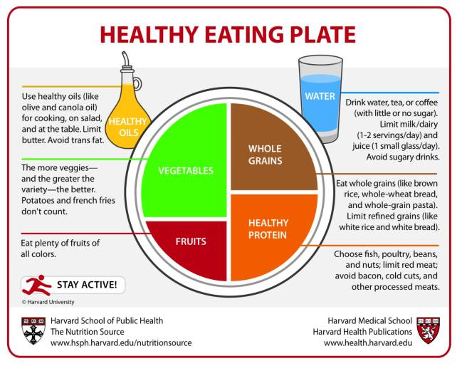

Healthy Eating Plate: A Guide to Nutritious Eating

The Healthy Eating Plate is a visual guide created by nutrition experts to help people make healthier food choices. It emphasizes the importance of a balanced diet that includes a variety of food groups. The plate is divided into sections that represent different food categories, such as fruits, vegetables, whole grains, and protein sources.
In addition, it encourages the consumption of healthy oils and water, while limiting sugary drinks, refined grains, red meat, and processed foods. This model promotes nutritional balance and supports long-term health.
By following the Healthy Eating Plate, individuals can improve their overall well-being, maintain a healthy weight, and reduce the risk of chronic diseases such as obesity, diabetes, and cardiovascular conditions.
Vegetables: The more vegetables and the greater the variety the better. Potatoes and french fries don’t count.
Fruits: Eat plenty of fruits of all colors.
Whole Grains: Eat whole grains (like brown rice, whole-wheat bread, and whole-grain pasta). Limit refined grains (like white rice and white bread).
Healthy Protein: Choose fish, poultry, beans, and nuts; limit red meat; avoid bacon, cold cuts, and other processed meats.
Healthy Oils: Use healthy oils (like olive and canola oil) for cooking, on salad, and at the table. Limit butter. Avoid trans fat.
Drinks: Drink water, tea, or coffee (with little or no sugar). Limit milk/dairy (1–2 servings/day) and juice (1 small glass/day). Avoid sugary drinks.
Physical Activity: Stay active as part of a healthy lifestyle.